| (1) |
| (2) |
| 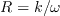 | (3) |
| 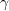 | (4) |
| 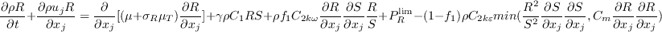 | (5) |
| 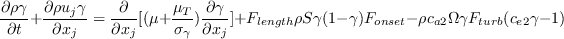 | (6) |
| 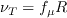 | (7) |
| 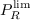 | (8) |
| 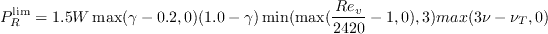 | (9) |
| (10) |
| 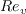 | (11) |
| (12) |
| (13) |
| 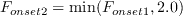 | (14) |
| 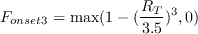 | (15) |
| 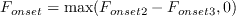 | (16) |
| 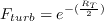 | (17) |
| 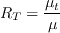 | (18) |
| (19) |
| 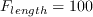 | (20) |
| (21) |
| (22) |
| 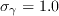 | (23) |
| 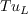 | (24) |
| 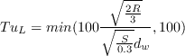 | (25) |
| 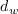 | (26) |
| (27) |
| 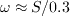 | (28) |
| 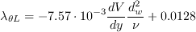 | (29) |
| (30) |
| (31) |
| 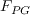 | (32) |
| 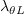 | (33) |
| 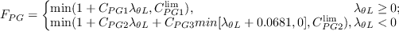 | (34) |
| 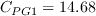 | (35) |
| 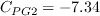 | (36) |
| 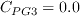 | (37) |
| 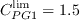 | (38) |
| 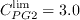 | (39) |
| 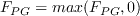 | (40) |
| (41) |
| 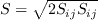 | (42) |
| 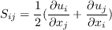 | (43) |
| 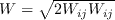 | (44) |
| 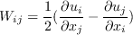 | (45) |
| (46) |
| (47) |
| (48) |
| (49) |
| 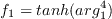 | (50) |
| 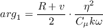 | (51) |
| 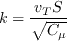 | (52) |
| (53) |
| 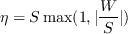 | (54) |
| (55) |
| 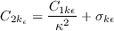 | (56) |
| (57) |
| (58) |
| (59) |
| 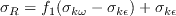 | (60) |
| (61) |
| 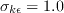 | (62) |
| (63) |
| 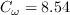 | (64) |
| (65) |
| 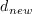 | (66) |
| 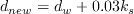 | (67) |
| 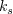 | (68) |
| 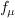 | (69) |
| (70) |
| 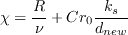 | (71) |
| 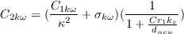 | (72) |
| 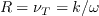 | (73) |
| (74) |
| 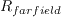 | (75) |
| 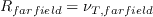 | (76) |
| (77) |
| (78) |
| (79) |
| (80) |